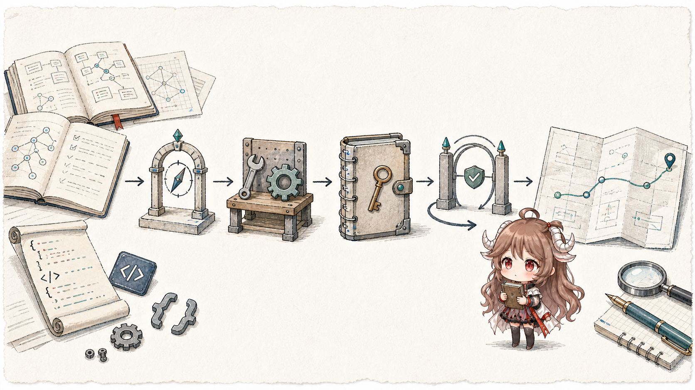

Source Notes and Engineering Essays
Make complex systems readable by path
This blog collects source-reading notes, architecture analysis, and engineering practice. Each series starts with a concrete task, then follows the order in which the program handles messages, state, tool calls, and recovery.
Use the reading paths below for a complete series, or continue to the post list for recent updates. Every series page keeps its chapters in an explicit reading order.

Index
Posts
Trace seven cordis tools, read-only Inspect, immutable Packages, dual Host/Client Fibers, approval, and process-local cleanup to bound temporary self-extension.
DeepSeek Harness Source Notes · Part VIMultiple Agents Are Not Multiple MessagesTrace SubagentRuntime, spawn/fork, continuable children, workflow, Ralph, and experimental Team across separate Sessions, ownership, and coordination boundaries.
DeepSeek Harness Source Notes · Part VCompaction Does Not Delete HistoryTrace token pressure, tool-result pruning, summary replacement, KV cache, and request/header reconstruction across one context checkpoint.
DeepSeek Harness Source Notes · Part IVA Side Effect Is Not Just a Function CallTrace tool/call, durability checkpoints, approval, sandboxing, JSONL, and crash repair to separate intent, permission, confinement, and unknown outcomes.
DeepSeek Harness Source Notes · Part IIIWhat Model-visible means logged actually constrainsSeparate immutable SessionEvents, a replaceable surface, model messages, and human history before making restoration refuse a false world.
DeepSeek Harness Source Notes · Part IIHow Everything is a Plugin becomes CordisRead patch composition, Context, Service, isolation, Fiber lifecycle, and HMR as one replaceable runtime with ordered ownership.
DeepSeek Harness Source Notes · Part I From dsh web to one turn/endConnect Profile, Bundle, Cordis, ReactLoopAgent, SessionEvent, and Web/ACP into one route before opening projection, side-effect, and recovery boundaries.
Standalone source reading · Agent self-evolution SkillOpt-Lite: When the Coding Agent Becomes the OptimizerFind recurring failures across several runs, let the coding agent revise skill.md, and rerun the same validation before keeping the change; then inspect which HarnessOpt steps are still disconnected.

Separate heartbeats, scheduled work, and background tasks; see how schedules are stored, duplicate delivery is avoided, and interrupted work resumes after a restart.
Reading OpenClaw · Part VIIHow Multi-Agent Delegation Inherits and Delivers Work
Separate configured Agents, native subagents, and ACP harnesses; see which context and tools a child receives and how its result returns to the parent task.
Reading OpenClaw · Part VIHow tool policy, sandbox, approval, and elevated form a security boundarySee which tools are exposed, where commands run, which operations need user approval, and when elevated execution may leave the sandbox.
Reading OpenClaw · Part VHow tools, skills, plugins, and hooks become capabilitiesSee how OpenClaw discovers tools, loads Skills and plugins, filters what is available, validates arguments, and runs hooks before and after each call.
Reading OpenClaw · Part IVHow context, memory, and compaction work togetherTrace workspace bootstrap, the system prompt, and ContextEngine into transcript, memory, pruning, and compaction to see what the model really receives.
Reading OpenClaw · Part IIIHow routing, sessions, and queues assign a message
See how a message selects an Agent and session, then compare how steer, followup, collect, and interrupt queue or stop current work.
Reading OpenClaw · Part IIWhy the Gateway is a control planeSee how clients connect, how operator and node identities differ, how events are broadcast, and how state is recovered after a gap or a slow client.
Reading OpenClaw · Part I How one message completes an agent turnFollow one message from ChannelPlugin, sessionKey, and queueing into the embedded agent, then through tool events, completion state, and the final reply.
Reading Model Internals · Part I From Activation to Agent ActionStart with J-space and silent reasoning; compare CoT, NLA, SAEs, personas, and activation steering; then reconnect the mechanisms to memory, self-evolution, and agent alignment.
Go from Request to Production · Chapter VIII Where does the bottleneck hide after connection reuse?Trace Transport.getConn, persistConn, bodyEOFSignal, and HTTP/2 stream/flow control, then combine httptrace, metrics, pprof, execution trace, and race.
Trace compiler escape graphs, slice backing arrays, mallocgc, each P's mcache, concurrent GC, write barriers, and mark assists to separate allocation rate from live heap.
context cancellation?
Trace cancelCtx, causes, timers, AfterFunc, WithoutCancel, request contexts, and Server.Shutdown to separate signals, cleanup, and joining.
Interface, generics, and reflection boundaries
Trace the two interface words, getitab/itabInit, convT, gc shapes and dictionaries, and reflect.Value to separate three kinds of retained type information.
Channels or Locks?
Follow hchan, chansend/chanrecv, sudog, selectgo, Mutex, and runtime semaphores through communication, backpressure, and critical sections.
goroutine Actually Run?
Follow go h.fetch through newproc, local/global run queues, findRunnable, work stealing, preemption, and runnable latency.
slice Shares
Use the URL slice, result channel, and JSON collector to trace value copies, aliases, append growth, interfaces, and range variables through the spec and runtime.
net/http and the runtime
Follow a concurrent fetch request from Server.Serve, request context, and Transport into internal/poll, netpoll, and a runnable goroutine.
Start with one repeatable task, then add outcome, process, safety, and operations checks.
AI EngineeringOuter Loop: Let Runs Hand Off Long-Lived WorkA run ends; learn how the task preserves progress, recovers, verifies, and starts another run.
AI EngineeringAgent Loop: Help the Agent Finish a Task Step by StepFollow repeated rounds of reading, editing, testing, and deciding inside one run.
AI EngineeringHarness Engineering: Give the Agent a Safe Place to ActSee how “run the tests” passes through tools, permission, isolation, execution, and records.
AI EngineeringContext Engineering: Prepare the Right Material for the Next StepDistinguish the library, retrieved candidates, and the material the model can actually see now.
AI EngineeringPrompt Engineering: Make the Task Requirements ClearStart with a vague request and add the goal, background, constraints, done criteria, and output.
AI Engineering How an Agent Task Actually Gets DoneFollow one task from request to verified result, then name the six engineering problems along the way.
AI Video Production Systems · Chapter II OpenMontage: When a Coding Agent Runs the Video WorkflowFollow pipeline manifests, stage directors, checkpoints, ToolRegistry, render locks, and final review from prompt to a resumable, accepted production.
AI Video Production Systems · Chapter I Temporal: When an AI Video Job Must Outlive Its ProcessFollow an AI music video through Workflows, Activities, Event History, replay, heartbeats, and external idempotency boundaries.
AI Video Production Systems · Route Notes From Durable Jobs to Delivered Media: Two Kinds of RecoverySeparate Temporal's job identity and event history from OpenMontage's creative stages, artifacts, and human approval before entering both source readings.
Agent Memory · Series Guide Agent Memory Series: Long-term memory is more than vector searchCompare what Mem0, Letta, Graphiti, LangMem, TencentDB, OpenViking, Cognee, and Supermemory store, when they write, and how they retrieve before entering each source reading.
Agent Framework Agent Framework Source NotesFollow one Agent task and compare which component calls the model, executes tools, stores state, and requests permission; then see how protocols and frameworks arrange those steps differently.
Long-term memory How Mem0's Memory Algorithm Evolved: From Mutable Memories to Graphs, ADD-only Writes, and Multi-signal RetrievalRead how paper mem0, mem0g, and mem0 v3 move from mutable memories to ADD-only writes, entity linking, and multi-signal retrieval.
Agent Memory Letta / Letta Code: What Returns When an Agent ResumesFollow memory_blocks, AgentState, Memory.compile, and MemFS to see how Letta saves long-term memory with the Agent and loads it again on resume.
Agent Memory Graphiti / Zep: Preserve History When Facts ChangeRead how episodes, EntityEdge, valid_at / invalid_at, and hybrid retrieval keep facts current without deleting history.
Agent Memory LangMem / LangGraph: When to Write Memory Now or Process It LaterRead how manage_memory, BaseStore, checkpointer, and background manager split memory across execution paths.
Agent Memory TencentDB Agent Memory: From local memory to a team memory serverRead Context Offload, L0-L3, Gateway, Memory Hub, and Memory Proxy as team assets enter agent context.
Agent Memory OpenViking: When Memory, Resources, and Skills Share One Context TreeFollow one coding-agent task through viking://, L0/L1/L2, find/search, and two-phase session commit, then see which material reaches the next model request.
Agent Memory Cognee / Supermemory: When Multiple Agents Share One Memory ServiceCompare Cognee's add / cognify / recall pipeline with Supermemory's add / profile / search / connectors to see how multiple Agents share writes, retrieval, and user profiles.
Source notes Follow one task through the Claude Code runtimeBuild the source-reading route first: CLI, REPL, queue, query loop, model calls, tool execution, transcript, and resume.
Source notes Memory is a long-lived instruction layerTrace how CLAUDE.md, auto memory, and session memory are added to the next request, and why they change the prompt-cache prefix.
Hermes Agent · 2 / 7 Hermes Agent: Where should information live?Separate stable, context, volatile, and turn-only input, then decide where facts, evidence, procedures, and temporary state should be stored.
Hermes Agent · 3 / 7 Hermes Agent: Why evolution starts after deliveryFollow finalizer, background review, nudge, and the two-stage Curator to see which lessons are prepared after delivery and when later turns can read them.
Hermes Agent · 4 / 7 Hermes Agent: How a /learn request becomes a SkillTrace source reading, normalization, writing, relationship updates, and later loading to see what explicit learning actually changes.
Hermes Agent · 5 / 7 Hermes Agent: How train, validation, and holdout differStart with task records, rubrics, and data sources, then build a fair measuring stick before optimizing any Skill.
Hermes Agent · 6 / 7 Hermes Agent: how DSPy and GEPA rewrite a SkillMake a Skill editable by the optimizer, follow execution, feedback, revision, and reruns, then confirm which Self-Evolution steps are actually connected.
Hermes Agent · 7 / 7 Hermes Agent: what counts as delivery after code changesCheck project facts, hermes verify, and the final pre-delivery checks so a delivery claim is made only after the latest validation passes.
Separate memory, transcript, compact, microcompact, and the exact content sent to the model instead of calling everything context.
Source notes Tools are checked before they runRead the path from model tool_use to validated local work and paired tool_result.
Source notes Permissions are the side-effect brakeFollow allow, deny, ask, hooks, permission requests, and denied tool results through the tool path.
Source notes How commands, Skills, and MCP enter a turnRead how slash commands, skills, plugins, MCP prompts, and MCP tools enter the current command table and tool pool.
Source notes How Claude Code isolates subagents and forked workCompare normal subagents with fork paths, worker tool scope, cache-stable prefixes, and context isolation.
Source notes Where Claude Code hooks can change executionPlace hooks back into the turn lifecycle: prompt, tool, stop, compact, session, and subagent boundaries.
Source notes Resume rebuilds runtime stateSeparate UI messages, durable transcript, API view, content replacement, and restored runtime state.
Source notes Prompt cache depends on a stable request prefixTie cache_control, stable prefixes, fork suffixes, microcompact, replacement state, and cache-break detection into one performance story.
Source notes Follow one request through the Codex runtimeFollow one request through entry, typed protocol, session, turn, model calls, tool execution, client events, and stored history.
Source notes How session history becomes a model requestFollow durable history into the next model request, then see how context diffs, compaction replacement, and rollout recovery change it.
Source notes Protocol and event streamA source-guided route through TurnStartParams, Submission, Op, EventMsg, app-server v2 event delivery, and rollout recovery.
Source notes How a tool request becomes local executionFollow ToolSpec, ToolRouter, ToolRegistry, ToolInvocation, hooks, approval, sandboxing, events, and tool output recording.
Source notes How Codex authorizes and sandboxes a toolFollow turn policy, permission hooks, ToolOrchestrator, SandboxAttempt, and sandbox-denied retry to see when a tool needs approval, when it enters a sandbox, and whether a denied attempt can be retried.
Source notes How runtime events become client UIFollow EventMsg, TurnItem, ThreadItem, ServerNotification, TUI history cells, rollout, and resume to see how clients observe one fact stream.
Source notes How skills, plugins, MCP, and subagents enter a turnFollow skills, plugins, MCP tool exposure, tool_search, dynamic tools, and AgentControl as extra capability joins one turn.
Source notes When hooks run and what they can changeFollow HookEventName and hook discovery across prompt handling, tool execution, compaction, and Stop to see exactly when hooks run.
Source notes How Codex keeps request prefixes reusableFollow OpenAI prompt caching, stable prefixes, dynamic tails, prompt_cache_key, compaction, and token usage metrics to see how Codex shapes perceived speed.
Source notes How rollout rebuilds resume, fork, and rollbackFollow RolloutItem, the JSONL writer, InitialHistory, reverse scan, replay suffix, rollback markers, and fork snapshots to see how Codex makes a thread recoverable.
Source notes How SDKs turn external calls into threads and turnsFollow app-server initialization, typed ClientRequest, thread/start, turn/start, listener events, and the Python / TypeScript SDKs to see how external clients enter Codex.
Source notes How Codex extracts and reuses lessons from old threadsFollow Feature::MemoryTool, memory_mode, Phase 1 / Phase 2, the memories workspace, read path, citation, and polluted threads as one local recall layer.
Source notes How Codex limits file writes and network access on WindowsFollow the OpenAI engineering post and openai/codex source to see how sandbox users, ACLs, firewall rules, command runner, and restricted tokens limit file writes and network access on the local machine.
Hermes Agent · 1 / 7 Hermes Agent: how one task runs and leaves useful experience behindFollow one message to finalizer: see how the model and tools hand work back and forth, how records are stored and recovered, and how useful lessons remain available later.